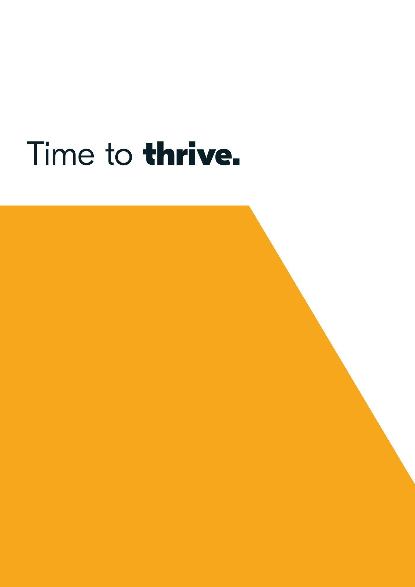
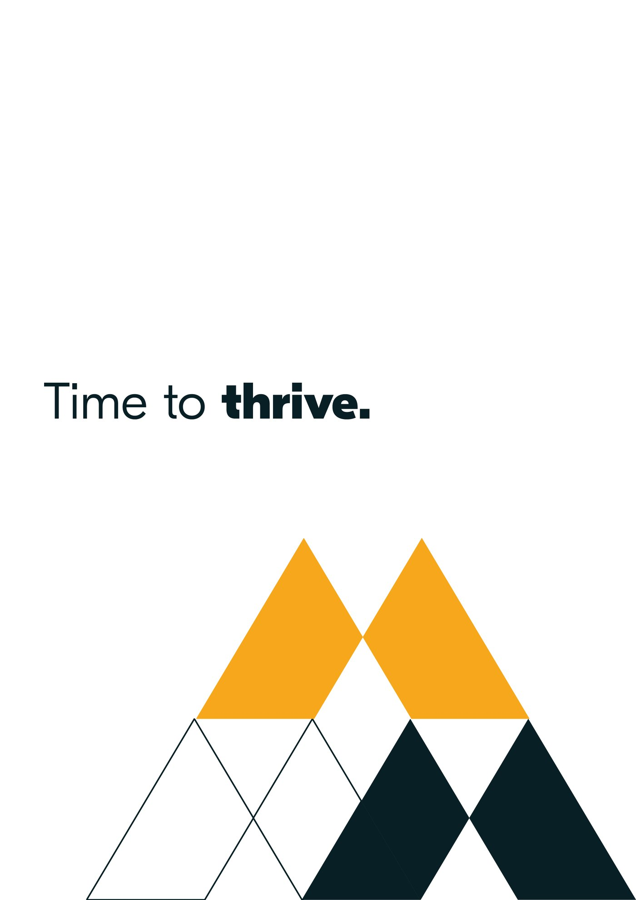

Wondrous
A people consultancy with real pedigree, and a brand that had fallen behind the work. We rebuilt the identity from the name down, set the colour from a clear idea, then designed and built the website to carry it.
The brief
Serious work, an identity that had aged.
Wondrous works with organisations on culture, leadership and inclusion, the human side of how a business performs. The thinking sat ahead of the market. The brand did not. It read as generic where the work was distinctive, and there was no website strong enough to stand behind a first conversation. The task was an identity with the warmth and confidence of the work, and a site to match.
The mark
A monogram built to rise.
The W is made from angled facets that lean upward, two rising forms that meet in the middle. It reads as people side by side, and as a quiet tick of progress. Drawn at a single weight, it works as a solid mark and breaks apart into a graphic device that can frame a photograph or hold a line of type.

The colour
A palette drawn from skin.
For a consultancy whose subject is people, the palette starts with people. The neutrals are built from skin tones, warm sienna through sand to a deep umber, grounded by a near-black ink. A single amber leads as the hero colour, the warmth that carries the two lines the brand lives by.
The system
One device, used with discipline.
The facets of the W become a flexible graphic device. It cuts across a layout to frame a portrait, holds the two brand lines, and sets a rhythm that reads instantly as Wondrous across a poster, a social post or a wall. The exploration kept the device tight so it could carry photography without fighting it.







A tool from the brand
The thinking, made usable.
The identity had to do more than look right. We turned one of the consultancy’s leadership models into a single working sheet, a guide to inclusive leadership that a client can read in a sitting and act on. The graphic device, the palette and the voice all carry through, so the tool feels like part of the brand rather than a leaflet bolted on.

The website
A site built to carry it.
We designed and built the website around one idea: when people flourish, business thrives. Rounded cards soften the structure for a calmer read, the amber leads the eye to the points that matter, and the portraits do the work the brand is about. The homepage runs from the headline through the offer, the proof and the solutions to a single clear contact.


The outcome
A brand that finally matches the work.
Wondrous came out of it with a complete identity, a name made into a mark, a palette with a reason behind it, a graphic device that travels, and a website built to put it all to work. The brand now reads with the same warmth and confidence as the consultancy itself.
Where does your brand sit against the business?
Every engagement starts with the Brand Alignment Diagnostic, a fixed first step that scores your brand against the business and shows what to fix first.